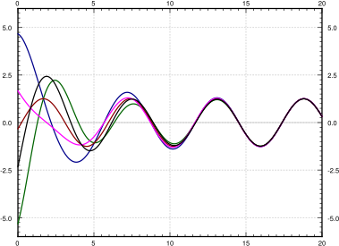
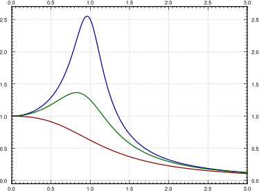

Let us return back to the example of a mass on a spring. We examine the case of forced oscillations, which we did not yet handle. That is, we consider the equation
for some nonzero \(F(t)\text{.}\) The setup is again: \(x\) is position, \(m\) is mass, \(c\) is friction, \(k\) is the spring constant, and \(F(t)\) is an external force acting on the mass.
We are interested in periodic forcing, such as noncentered rotating parts, or perhaps loud sounds, or other sources of periodic force. Using Fourier series, see Chapter 4, we note that we can understand all periodic functions by considering \(F(t) = F_0 \cos (\omega t)\) (or sine instead of cosine, the calculations are essentially the same), so we focus on this simple case.
where \(\omega_0 = \sqrt{\nicefrac{k}{m}}\) is the natural frequency (angular). It is the frequency at which the system “wants to oscillate” without external interference.
Suppose that \(\omega_0 \not= \omega\text{.}\) We solve using the method of undetermined coefficients. We try the solution \(x_p = A \cos (\omega t)\) and solve for \(A\text{.}\) We do not need a sine in our trial solution as after plugging in we only have cosines. If you include a sine, it is fine; you will find that its coefficient is zero (I could not find a second rhyme). We plug into the equation and solve for \(A\) to find
Let us compute. First we read off the parameters: \(\omega = \pi\text{,}\)\(\omega_0 = \sqrt{\nicefrac{8}{0.5}} = 4\text{,}\)\(F_0 = 10\text{,}\)\(m=0.5\text{.}\) The general solution is
Now suppose \(\omega_0 = \omega\text{.}\) We notice that \(\cos (\omega t)\) solves the associated homogeneous equation. Hence, we cannot try the solution \(A \cos (\omega t)\) with the method of undetermined coefficients. Therefore, we try \(x_p = A t \cos (\omega t) + B t \sin (\omega t)\text{.}\) This time we do need the sine term, since the second derivative of \(t \cos (\omega t)\) contains sines. We write the equation
Hence \(A = 0\) and \(B = \frac{F_0}{2m\omega}\text{.}\) Our particular solution is \(\frac{F_0}{2m\omega} \, t \sin (\omega t)\) and the general solution is
The important term is the last one (the particular solution we found). This term grows without bound as \(t \to \infty\text{.}\) In fact it oscillates between \(\frac{F_0 t}{2m\omega}\) and \(\frac{- F_0 t}{2m\omega}\text{.}\) The first two terms only oscillate between \(\pm\sqrt{C_1^2 + C_2^2}\text{,}\) which becomes smaller and smaller in proportion to the oscillations of the last term as \(t\) gets larger. In Figure 2.6, we see the graph with \(C_1=C_2=0\text{,}\)\(F_0 = 2\text{,}\)\(m=1\text{,}\)\(\omega = \pi\text{.}\)
By forcing the system at just the right frequency, we produce very wild oscillations. This kind of behavior is called resonance or perhaps pure resonance. Sometimes resonance is desired. For example, remember when as a kid you could start swinging by just moving back and forth on the swing seat in the “correct frequency”? You were trying to achieve resonance. The force of each one of your moves was small, but after a while it produced large swings.
On the other hand, resonance can be destructive. In an earthquake, some buildings collapse while others may be relatively undamaged. This is due to different buildings having different resonance frequencies. So figuring out the resonance frequency can be very important.
A common (but wrong) example of the destructive force of resonance is the Tacoma Narrows bridge failure. It turns out there was a different phenomenon at play 1
K. Billah and R. Scanlan, Resonance, Tacoma Narrows Bridge Failure, and Undergraduate Physics Textbooks, American Journal of Physics, 59(2), 1991, 118–124, http://www.ketchum.org/billah/Billah-Scanlan.pdf
The roots of the characteristic equation of the associated homogeneous problem are \(r_1,r_2 = -p \pm \sqrt{p^2 - \omega_0^2}\text{.}\) The form of the general solution of the associated homogeneous equation depends on the sign of \(p^2 - \omega_0^2\text{,}\) or equivalently on the sign of \(c^2 - 4km\text{,}\) as before:
Let us find a particular solution. There can be no conflicts when trying to solve for the undetermined coefficients by trying \(x_p = A \cos (\omega t)
+ B \sin (\omega t)\text{.}\) We plug in and solve for \(A\) and \(B\text{.}\) We get (the tedious details are left to reader)
The amplitude \(C = \sqrt{A^2+B^2}\) of this solution is
\begin{equation}
C = \frac{F_0}{m \sqrt{{(2\omega p)}^2+{(\omega_0^2-\omega^2)}^2}} .
\end{equation}
Let us write the solution in the alternative form \(x_p = C \cos(\omega t - \gamma)\) for amplitude \(C\) and phase shift \(\gamma\) where (if \(\omega \not= \omega_0\))
For reasons we will explain in a moment, we call \(x_c\) the transient solution and denote it by \(x_{tr}\text{.}\) We call \(x_p\) the steady periodic solution and denote it by \(x_{sp}\text{.}\) The general solution is
The transient solution \(x_{tr} = x_c\) goes to zero as \(t \to \infty\text{,}\) as all the terms involve an exponential with a negative exponent. So for large \(t\text{,}\) the effect of \(x_{tr}\) is negligible and we see essentially only \(x_{sp}\text{.}\) Hence the name transient. Notice that \(x_{sp}\) involves no arbitrary constants, and the initial conditions only affect \(x_{tr}\text{.}\) Thus, the effect of the initial conditions is negligible after some period of time. We might as well focus on the steady periodic solution and ignore the transient solution. See Figure 2.7 for a graph given several different initial conditions.
Figure2.7.Solutions with different initial conditions for parameters \(k=1\text{,}\)\(m=1\text{,}\)\(F_0 = 1\text{,}\)\(c=0.7\text{,}\) and \(\omega=1.1\text{.}\)
How fast \(x_{tr}\) goes to zero depends on \(p\) (and hence \(c\)). The bigger \(p\) is (the bigger \(c\) is), the “faster” \(x_{tr}\) becomes negligible. Conversely, the smaller the damping, the longer the “transient region.” This is consistent with the observation that when \(c=0\text{,}\) the initial conditions affect the behavior for all time (i.e. an infinite “transient region”).
Let us describe what we mean by resonance when damping is present. There were no conflicts solving with undetermined coefficients, so no term in \(x_{sp}\) goes to infinity. Instead, we consider the amplitude \(C\) of the steady periodic solution \(x_{sp}\text{,}\) that is, the furthest the mass goes either way from the rest position. We plot \(C\) as a function of \(\omega\) (fix all other parameters) and we find its maximum. The \(\omega\) that gives this maximum is the practical resonance frequency. The maximal amplitude \(C(\omega)\) is the practical resonance amplitude. Thus when damping is present we talk of practical resonance rather than pure resonance. Figure 2.8 shows a sample plot for three different values of \(c\text{.}\) Notice that the practical resonance amplitude grows as damping gets smaller, and practical resonance can disappear altogether when damping is large.
Figure2.8.Graph of \(C(\omega)\) showing practical resonance with parameters \(k=1\text{,}\)\(m=1\text{,}\)\(F_0 = 1\text{.}\) The top line is with \(c=0.4\text{,}\) the middle line with \(c=0.8\text{,}\) and the bottom line with \(c=1.6\text{.}\)
If \(\omega_0^2 - 2p^2\) is positive, then \(\sqrt{\omega_0^2 - 2p^2}\) is the practical resonance frequency (the point where \(C(\omega)\) is maximal). This conclusion follows by the first derivative test, for example, as then \(C'(\omega) > 0\) for small \(\omega\) in this case. If on the other hand \(\omega_0^2 - 2p^2\) is not positive, then \(C(\omega)\) achieves its maximum at \(\omega=0\text{,}\) and there is no practical resonance since we assume \(\omega > 0\) in our system. In this case, the amplitude gets larger as the forcing frequency gets smaller.
If practical resonance occurs, the frequency is smaller than \(\omega_0\text{.}\) As the damping \(c\) (and hence \(p\)) becomes smaller, the practical resonance frequency goes to \(\omega_0\text{.}\) So when damping is very small, \(\omega_0\) is a good estimate of the practical resonance frequency. This behavior agrees with the observation that when \(c=0\text{,}\) then \(\omega_0\) is the resonance frequency.
Another interesting observation to make is that when \(\omega \to \infty\text{,}\) then \(C \to 0\text{.}\) This means that if the forcing frequency gets too high it does not manage to get the mass moving in the mass-spring system. This is quite reasonable intuitively. If we wiggle back and forth really fast while sitting on a swing, we will not get it moving at all, no matter how forceful. Fast vibrations just cancel each other out before the mass has any chance of responding by moving one way or the other.
The behavior is more complicated if the forcing function is not an exact cosine wave, but for example a square wave. A general periodic function will be the sum (superposition) of many cosine waves of different frequencies. The reader is encouraged to come back to this section once we have learned about the Fourier series.
Take \(m x'' + c x' + kx = F_0 \cos (\omega t)\text{.}\) Fix \(m > 0\text{,}\)\(k > 0\text{,}\) and \(F_0 > 0\text{.}\) Consider the function \(C(\omega)\text{.}\) For what values of \(c\) (solve in terms of \(m\text{,}\)\(k\text{,}\) and \(F_0\)) will there be no practical resonance (that is, for what values of \(c\) is there no maximum of \(C(\omega)\) for \(\omega > 0\))?
Take \(m x'' + c x' + kx = F_0 \cos (\omega t)\text{.}\) Fix \(c > 0\text{,}\)\(k > 0\text{,}\) and \(F_0 > 0\text{.}\) Consider the function \(C(\omega)\text{.}\) For what values of \(m\) (solve in terms of \(c\text{,}\)\(k\text{,}\) and \(F_0\)) will there be no practical resonance (that is, for what values of \(m\) is there no maximum of \(C(\omega)\) for \(\omega > 0\))?
A water tower in an earthquake acts as a mass-spring system. Assume that the container on top is full and the water does not move around. The container then acts as the mass and the support acts as the spring, where the induced vibrations are horizontal. The container with water has a mass of \(m=\unit[10,000]{kg}\text{.}\) It takes a force of 1000 newtons to displace the container 1 meter. For simplicity, assume no friction. When the earthquake hits, the water tower is at rest (it is not moving). The earthquake induces an external force \(F(t) = m A \omega^2 \cos (\omega t)\) newtons.
If \(\omega\) is not the natural frequency, find a formula for the maximal amplitude of the resulting oscillations of the water container (the maximal deviation from the rest position). The motion will be a high-frequency wave modulated by a low-frequency wave, so simply find the constant in front of the sines.
Suppose \(A = 1\) and an earthquake with frequency 0.5 cycles per second comes. What is the amplitude of the oscillations? Suppose that if the water tower moves more than 1.5 meters from the rest position, the tower collapses. Will the tower collapse?
A mass of 4 kg on a spring with \(k=\unitfrac[4]{N}{m}\) and a damping constant \(c=\unitfrac[1]{Ns}{m}\text{.}\) Suppose that \(F_0 = \unit[2]{N}\text{.}\) Using the forcing function \(F_0 \cos (\omega t)\text{,}\) find the \(\omega\) that causes practical resonance and find the practical resonance amplitude.
Suppose there is no damping in a mass and spring system with \(m = \unit[5]{kg}\text{,}\)\(k= \unitfrac[20]{N}{m}\text{,}\) and \(F_0 = \unit[5]{N}\text{.}\) Suppose \(\omega\) is chosen to be precisely the resonance frequency.